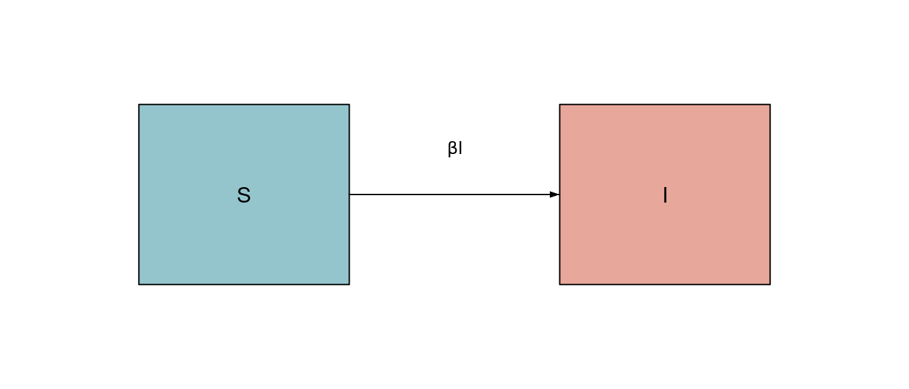
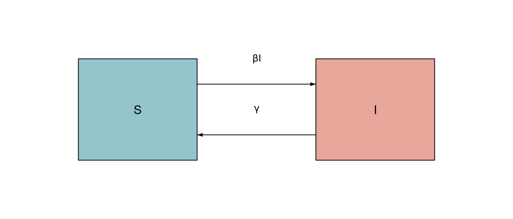
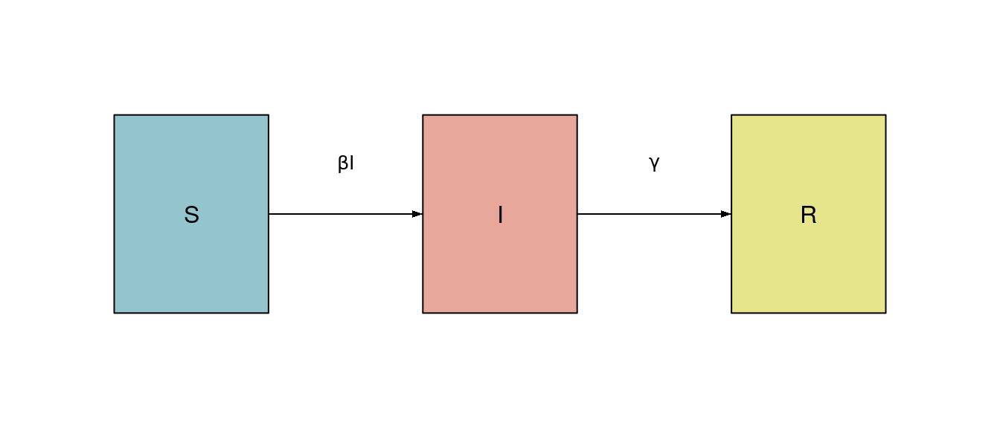
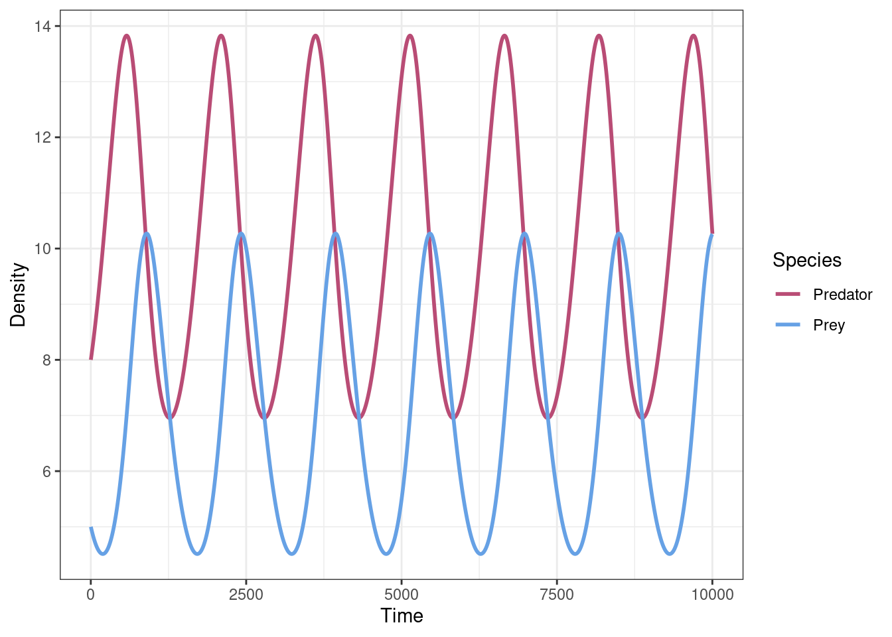

Models for disease dynamics
Susceptible–Infectious
Disease dynamics are typically represented using compartmental models. In these models, the population is divided into classes (the compartments/boxes) and moves between classes at given rates (the arrows connecting the boxes).
The simplest model categorizes individuals as either susceptible (\(X\)) or infectious (\(Y\)). Susceptible individuals are healthy and infective/infectious people are sick. A susceptible individual can become infectious by contact with an infectious one. We assume that the population is well mixed so that every individual has equal probability of coming into contact with every other individual. Note that infectious individuals cannot recover (e.g., herpes, HIV). For simplicity, we study the model in the absence of demography (births, deaths, immigration, emigration) and assume no disease-induced mortality.
We derive the differential equation for the susceptible-infectious (SI) model by considering the number of individuals that become infectious during time \(\Delta t\).
We have \(N\) individuals in the population, and \(N=X+Y\) is fixed. This implies that \(dN/dt = 0\), and therefore \(dX / dt + dY/dt = 0\). We define \(S=X/N\) as the fraction of the population susceptible and \(I=Y/N\) as the fraction infectious. Let \(\beta \Delta t\) be the probability that an infectious person infects a susceptible during \(\Delta t\). The expected fraction of new infectious individuals over this interval is therefore \(\beta \Delta t S I\):
\[ I(t+\Delta t)= I(t) + \beta \Delta t S(t) I(t) \]
Let’s analyze the system in continuous time. To convert to differential equations, we consider
\[ I(t+\Delta t)- I(t) = \beta \Delta t\, S(t) I(t) \]
and take the limit for \(\Delta t \rightarrow 0\),
\[ \lim_{\Delta t \rightarrow 0} \dfrac{I(t+\Delta t)- I(t)}{\Delta t} = \frac{d I(t)}{d t} = \beta S(t) I(t) \]
Therefore,
\[ \frac{d S(t)}{d t} = -\beta S(t) I(t) \]
We can sketch the model
Transmission
If in a population each individual interacts with equal probability with everyone else, we have homogeneous mixing. Assume a susceptible individual has \(k\) contacts/unit time. Of these contacts, \(I = X/N\) are with infectious individuals. During \(\Delta t\), the expected number of contacts with infectious individuals is thus \(k I \Delta t\). If the disease is transmitted with probability \(c\), the probability that a susceptible individual is not infected in the time interval is
\[ (1-c)^{k I \Delta t}=1-\Delta q \]
Where \(\Delta q\) is the quantity we want to estimate (the probability/rate of becoming infected/infectious). Taking the logarithm of both sides, and defining \(\beta = -k \log(1-c) > 0\) we obtain:
\[ \begin{aligned} {kI\, \Delta t}\log(1-c) &=\log(1-\Delta q)\\ -\beta I \Delta t&=\log(1-\Delta q)\\ e^{-\beta I \Delta t}&=1-\Delta q\\ \Delta q&=1-e^{-\beta I \Delta t}\\ \end{aligned} \]
Remember that
\[ e^x=1+x+\frac{x^2}{2!}+\frac{x^3}{3!}+\frac{x^4}{4!}+\ldots \]
which means \(\Delta q\) can be approximated as
\[ \Delta q \approx 1-(1+({-\beta I \Delta t})) = \beta I \Delta t \]
dividing both sides by \(\Delta t\)
\[ \frac{\Delta q}{\Delta t} = {\beta I} \]
As we take \(\Delta t \rightarrow 0\), we have
\[ \frac{d q}{d t} = {\beta I} \]
which is the transmission (infection) rate per susceptible individual. Often this is called the force of infection and represented by \(\lambda\). Rescaling,
\[ \frac{d X}{d t}=-\lambda X =-\beta XI \]
Dividing both sides by \(N\), we obtain the change in the fraction susceptible:
\[ \frac{d S}{d t}=-\beta I S \]
Back to the SI model
If we assume a fixed population, \(1=S+I\) (i.e. no births or deaths, we can take \(N = 1\) without loss of generality), we can eliminate \(S\) from the equations above and write
\[ \frac{d I(t)}{d t} = \beta I(t) (1-I(t)) \]
The equation above should remind you of something: it is logistic growth with \(r=\beta\) and \(K=1\). We already know that for every initial condition for which \(I(0)=I_0>0\), and for \(\beta >0\), eventually the whole population becomes infected. There is only one stable equilibrium (all individuals infected) and one unstable equilibrium (disease-free).
Susceptible–Infectious–Susceptible (SIS)
The SI model can be extended to the SIS model, where an infected can recover and become susceptible again (a good approximation for some bacterial infections). We assume that the probability that an infectious individual recovers during time \(\Delta t\) is given by \(\gamma \Delta t\). Then the fraction of infective individuals that recover during time \(\Delta t\) is given by \(I \gamma \Delta t\):
\[ I(t + \Delta t)=I(t)+ \beta \Delta t S(t) I(t) - \gamma I(t)\Delta t \]
\[ I(t + \Delta t)-I(t)= \beta \Delta t S(t) I(t) - \gamma I(t)\Delta t \]
\[ \lim_{\Delta t \rightarrow 0}\frac{I(t + \Delta t)-I(t)}{\Delta t}= \beta S(t) I(t) - \gamma I(t) \]
\[ \frac{dI(t)}{d t}= \beta S(t) I(t) - \gamma I(t) = I(t) (\beta S(t) - \gamma) \]
The parameter \(\gamma\) is the recovery rate, and \(1/\gamma\) is the expected duration of infection. The flow diagram becomes

Setting \(S=1-I\), we obtain
\[ \frac{dI(t)}{d t}= I(t) (\beta (1-I(t)) - \gamma) = I(t) (\beta - \gamma) - \beta I(t)^2 \]
When the disease is rare (i.e., \(I(t) \approx 0\)), we can write the initial growth as:
\[ \dfrac{1}{I(t)} \dfrac{dI(t)}{dt} = \beta - \gamma - \beta I(t) \approx \beta - \gamma \]
The basic reproductive ratio or intrinsic reproductive number, \({\mathcal R}_0\), for this model is defined as
\[ {\mathcal R}_0=\frac{\beta}{\gamma} \]
Note that \({\mathcal R}_0\) determines whether a disease will spread in a susceptible population when infections are rare. Looking at the ratio above, you can probably intuit the criteria for growth in terms of \({\mathcal R}_0\) (we’ll see this in more detail later).
\[ \frac{dI}{d t}=\beta I \left(1 - \frac{\gamma}{\beta} - I\right) = \beta I \left(1 - \frac{1}{{\mathcal R}_0} - I\right) \]
The equilibria are (\(I^\star=0\), \(S^\star=1\)) and (\(I^\star=1-1/{\mathcal R}_0\), \(S^\star =1/{\mathcal R}_0\)). The latter equilibrium is feasible whenever \({\mathcal R}_0>1\). Let’s reformulate the model:
\[ \frac{dI}{d t}=\beta I\left(\frac{{\mathcal R}_0-1}{{\mathcal R}_0}-I\right) \]
We again have a logistic model with \(r=\beta \frac{{\mathcal R}_0-1}{{\mathcal R}_0}\) and \(K= \frac{{\mathcal R}_0-1}{{\mathcal R}_0}\).
- If \({\mathcal R}_0<1\), the disease will die out.
- If \({\mathcal R}_0>1\), the system will eventually arrive to the second equilibrium point. Depending on the value of \({\mathcal R}_0\), in the SIS model, a certain fraction of the population will constantly be infected (i.e., the disease will be endemic).
Derivation of \({\mathcal R}_0\)
Let \(l(t)\) be the probability that an individual who is infected at time \(t_0=0\) is still infectious at time \(t\). This probability is simply the probability of not being recovered at time \(t\):
\[ \begin{aligned} l(t + \Delta t) &= l(t)(1- \gamma \Delta t)\\ l(t + \Delta t)-l(t) &= -l(t) \gamma \Delta t\\ \dfrac{l(t + \Delta t)-l(t)}{\Delta t} &= - l(t) \gamma\\ \end{aligned} \]
And therefore
\[ \lim_{\Delta t \rightarrow 0} \frac{l(t + \Delta t)-l(t)}{\Delta t} = \dfrac{d l(t)}{ dt}= - l(t) \gamma \]
Assuming that the individual is infected at time \(t(0)=t_0\), \(l(t_0)=1\), we can solve by integration:
\[ l(t)=e^{-\gamma t} \]
How many individuals will an infectious individual infect? We want to estimate the number of “secondary infections” caused by each infectious individual. The expected number of secondary infections is obtained by multiplying the probability that the individual is still infected during time \(dt\) by the contact rate times the number of susceptibles, \(X(t)\beta dt\). Assuming that the number of infections caused by a single individual is negligible compared to the whole population \(N\) (i.e., \(X \approx N\)), the expected total number of secondary infections caused by a single infected is
\[ \int_0^{\infty}\beta X(t)l(t) dt \approx \beta N \int_0^{\infty} l(t) dt \]
Substituting \(l(t)\) with its solution, we get
\[ \int_0^{\infty}\beta X(t)l(t) dt \approx \beta N \int_0^{\infty} e^{-\gamma t} dt \]
\[ \int_0^{\infty}\beta X(t)l(t) dt \approx \beta N \frac{1}{\gamma} \]
Dividing both sides by \(N\), we arrive at
\[ \int_0^{\infty}\beta S(t)l(t) dt \approx {\mathcal R}_0 \]
How do we justify the approximation \(X(t)=N\)? Suppose we have a completely susceptible population. We then introduce a single infectious individual, and we assume that before the person recovers, the number of susceptibles remains \(\approx N\). Therefore, if \({\mathcal R}_0>1\), the individual produces more than one other infection. (In theory, this might be just one additional infection, or an expectation of \(>1\) infection. As long as the reproductive number \(R_t>1\), we effectively have a “chain reaction” and a growing epidemic.) On the other hand, if \({\mathcal R}_0<1\), the initial infectious individual cannot pass on the infection, and the disease dies out.
Susceptible–Infectious–Recovered (SIR)
In this model, once an individual has recovered from the disease, she becomes immune to it. We call such individuals recovered (\(R\), sometimes “removed”). This model is indicated for non-life-threatening pathogens that induce sterilizing immunity (however, one could assimilate deaths to recovery). The model consists of three ODEs:
\[ \begin{cases} \dfrac{dS}{dt}=-\beta SI\\ \dfrac{dI}{dt}=\beta SI -\gamma I \\ \dfrac{dR}{dt}=\gamma I \end{cases} \]
Again, we assume that \(1=S+I+R\), and thus \(\dfrac{dS}{dt} + \dfrac{dI}{dt} + \dfrac{dR}{dt} = 0\). Draw the flow diagram for this model

When will an epidemic occur? Consider the equation for the infectious class:
\[ \frac{dI}{dt}=\beta SI -\gamma I = I(\beta S -\gamma) \]
It is clear that for any \(S(0)<\gamma/\beta\), the growth rate of the infectious class is negative, and the disease dies out. The minimum susceptible fraction for \(\frac{dI}{dt}<0\) is called the susceptible threshold, and it determines the level of herd immunity needed to prevent an outbreak. Recall the basic reproductive ratio for this model is \({\mathcal R}_0=\beta/\gamma\). As shown before, if \({\mathcal R}_0>1\), the disease will spread, and it fail to spread if \({\mathcal R}_0<1\). More fundamentally, we know that \(R_t<1\) whenever \(S(t)<\gamma/\beta\). Thus, an epidemic’s inflection point occurs at the susceptible threshold (\(S(t)=\gamma/\beta=1/{\mathcal R}_0\)).
Fraction of the population recovered
We want to know how many individuals will be infected by the disease. We assume that at the beginning, \(R(0)=0\). (Note \(R(t)\) for this section refers to recovered individuals and \({\mathcal R}_0\) to the intrinsic reproductive number; the notation is treacherous.) We want to write the fraction recovered at \(R(t)\). Let’s start by analyzing how the growth rate of \(S(t)\) changes in response to \(R(t)\):
\[ \begin{aligned} \dfrac{dS}{dR} & =\dfrac{dS}{dt}\dfrac{dt}{dR}\\ &= \dfrac{-\beta S I}{\gamma I}\\ &=-\dfrac{\beta}{\gamma}S\\ &=-{\mathcal R}_0 S \end{aligned} \]
We can separate the equation:
\[ \frac{dS}{S}=-{\mathcal R}_0 dR \]
Integrating,
\[ \begin{aligned} \int \dfrac{1}{S} dS & =-{\mathcal R}_0 \int dR \\ \log{S} & =-{\mathcal R}_0 R + C\\ S &= e^{-{\mathcal R}_0 R} e^C \end{aligned} \] To determine the constant of integration, we substitute \(S(0) = S_0\) and \(R(0) = 0\), obtaining \(S_0 = e^C\) and thus:
\[ S(t) = S(0)e^{-{\mathcal R}_0 R(t)} \]
Note that \(e^{-{\mathcal R}_0 R_t}\) is always positive. Thus, the fraction susceptible is always \(S(t)>0\). This means that, regardless the value of \({\mathcal R}_0\), some of the population escapes the disease. Another key point is that the end of the epidemic is not caused by the complete absence of susceptibles, but rather their decline below the susceptible threshold. What happens for \(t \rightarrow \infty\)? We expect that all the infectious individuals will have recovered, so \(I=0\). Therefore, \(S(\infty)=1-R(\infty)\).
We take the equation
\[ S(t)=S(0)e^{-{\mathcal R}_0 R(t)} \]
and consider the limit at \(t \rightarrow \infty\),
\[ S(\infty)=1-R(\infty)=S(0)e^{-{\mathcal R}_0 R(\infty)} \]
and assuming that at the beginning, \(S(0) \approx 1\), we obtain
\[ R(\infty)=1-e^{-{\mathcal R}_0 R(\infty)} \]
which is a transcendental equation, i.e., an equation we cannot solve analytically, but only numerically. This is because it contains the transcendental function \(e^x\) that cannot be expressed as a finite sequence of algebraic operations (other transcendental functions are, for example, \(\log(x)\), \(\sin(x)\), and \(\tan(x)\)). Only some special transcendental equations can be solved analytically.
Newton’s method
This is a simple and powerful method to find numerically the solutions (roots, or zeros) of an equation, i.e. the values of \(x\) such that \(f(x) = 0\). There is no guarantee it will work, given that there are some “degenerate” cases for which the method does not converge.
The main idea can be seen using Taylor expansion. We want to approximate the value of the function \(f(x)\) at its root (\(\alpha\), such that \(f(\alpha) = 0\)). We have:
\[ \begin{aligned} f(\alpha) = 0 &= f(x_0) + \left. \dfrac{d f(x)}{d x} \right|_{x_0} (x_0 - \alpha) + \mathcal E \\ &= f(x_0) + f'(x_0) (x_0 - \alpha) + \mathcal E \end{aligned} \]
where \(R\) is the sum of all the higher-order terms (interpreted here as an error). Dividing both sides by \(f'(x_0)\), we have:
\[ \alpha - \frac{\mathcal E }{f'(x_0)}= x_0 + \dfrac{f(x_0)}{f'(x_0)} \]
Note that whenever \(x_0\) is close to \(\alpha\), \(\mathcal E \approx 0\). The idea of Newton’s method is to iterate:
\[ x_1 = x_0 + \dfrac{f(x_0)}{f'(x_0)} \]
and in general
\[ x_{n+1} = x_n + \dfrac{f(x_n)}{f'(x_n)} \]
If the function behaves well, we should get increasingly better approximations of the solution. The R code for the Newton’s method looks something like
xn <- 1000000 # a very large number
xnp1 <- 1 # a guesstimate of the root
Eps <- 10^(-3) # tolerance
while (abs(xn - xnp1) > Eps) {
xn <- xnp1
xnp1 <- xn - Funct(xn, par1, par2) / DeriFunct(xn, par1, par2)
}where Funct and DeriFunct are two R functions returning the value of \(f(x)\) and \(f'(x)\) respectively using the parameters par1,par2.
Exercise: Approximating epidemic sizes using Newton’s method
Examine the following templates:
library(ggplot2)
Funct <- function(x, R0) {
# write the code for the function here:
# return the value f(x)
return("???????")
}
DeriFunct <- function(x, R0) {
# write the code for the derivative here
# return the value of df(x)/dx evaluated at x
return("???????")
}
RInf <- function(R0, Funct, DeriFunct) {
xn <- 1000000 # a very large number
xnp1 <- 0.5 # a guesstimate of the root
Eps <- 10^(-3) # tolerance
while (abs(xn - xnp1) > Eps) {
xn <- xnp1
xnp1 <- xn - Funct(xn, R0) / DeriFunct(xn, R0)
}
return(xnp1)
}
# get the R0 values to look at
R0s <- seq(0, 5, length.out=500)
# initialize and then fill out the fraction recovered after
# the dynamics have completed at each R0 value
RecFracs <- rep(0, 500)
for (ii in 1:500){
RecFracs[ii] <- RInf(R0s[ii], Funct, DeriFunct)
}
# plot the results
ggplot(data_frame(RecFracs, R0s)) +
geom_line(aes(x=R0s, y=RecFracs)) +
# add in the threshold R0 value
geom_hline(aes(yintercept=1), colour="red") +
# make the labels nicer and more informative
xlab(expression(paste(R[0]))) +
ylab("Fraction Recovered") +
theme_bw()Use the templates to plot the fraction of recovered population \(R({\infty})\) as a function of \({\mathcal R}_0\). Values for \({\mathcal R}_0\) change from disease to disease and from host population to host population. For example, estimates for influenza are \({\mathcal R}_0 \in [1.2,3]\); for rubella, we have \({\mathcal R}_0 \in [6,7]\); and for measles, \({\mathcal R}_0 \in [16,18]\). What fraction of a completely susceptible population will be infected by measles? rubella? influenza? Change the code above to compute the values.
Epidemic curves
We can approximate the development of the disease through time. Let’s start from
\[ \frac{d R}{dt}= \gamma I \]
We know that \(R+I+S=1\); therefore,
\[ \frac{d R}{dt}= \gamma(1-S-R) \]
Plugging in the equation we found above, which is valid for \(R(0) \approx 0\),
\[ S(t)=S(0)e^{-{\mathcal R}_0 R(t)} \]
we obtain
\[ \frac{d R}{dt}= \gamma (1-S(0)e^{-{\mathcal R}_0 R(t)}-R(t)) \]
Exercise: Visualizing epidemic dynamics
For measles, it has been estimated that \(\gamma \approx 0.2\)/day and that \({\mathcal R}_0 \approx 18\). Use the Runge-Kutta 4th-order ODE solver from the R package deSolve to integrate the equation above for the disease in a population for which \(S(0)=0.9999\), \(R(0)=0\), \(I(0)=0.0001\). Run the model for 30 days. What is the proportion of recovered individuals after 5 days? And after 10 days? Plot the curves of \(S\), \(I\), and \(R\). Gain experience points by experimenting with different solvers to see if they have an effect.
Number of infectious individuals: numerical methods
Numerical approximations can go wrong. We can reformulate the models so that the numerical noise introduced by rounding is minimized. Let’s start by log-transforming:
\[ \begin{cases} s=\log(S)\\ i=\log(I)\\ r=\log(R) \end{cases} \] we don’t actually need the equation for \(r\), as we know that \(S+I+R=1\). The system becomes:
\[ \begin{cases} e^s \dfrac{ds}{dt}=-\beta e^{s+i}\\ e^i \dfrac{di}{dt}=\beta e^{s+i}-\gamma e^i \end{cases} \]
which, after simplification, becomes:
\[ \begin{cases} \dfrac{ds}{dt}=-\beta e^{i}\\ \dfrac{di}{dt}=\beta e^{s}-\gamma \end{cases} \]
Note that there are no multiplications and that each term is a function of just one variable. Thus, the rounding errors are dramatically reduced.
Exercise: Visualizing epidemic dynamics after log-transforming to minimize error
Use the equations above to model an outbreak of influenza, assuming that \(\beta \approx 1.66\)/day and \(1/\gamma \approx 2.2\) days. Run the model for 15 days using deSolve. Let the initial states be \(I(0)N=2\), \(R(0)N=0\) and \(N=750\). Plot the fraction of infected and susceptible individuals through time. Compare the predicted trajectories to those from the original (non-log-transformed) equations using the same ODE solver.
If you want more practice with numerical integration, contrast the solutions obtained with Euler’s method for the original and log-transformed equations. As a template for developing the code, you may use the following, which integrates using Euler2 a Lotka-Volterra predator-prey system.
# Lotka Volterra Model
# dX/dt=rX-aXY
# dY/dt=aXY-Y
PredatorPrey <- function(MySpp, MyParams) {
x1 <- MyParams[1] * MySpp[1] -
MyParams[2] * MySpp[1] * MySpp[2]
y1 <- MyParams[2] * MySpp[1] * MySpp[2] - MySpp[2]
return(c(x1, y1))
}
Euler2 <- function(MySpp, D, FUN, MyParams) {
m1 <- MySpp + FUN(MySpp, MyParams) * D
return(MySpp + 0.5 * (FUN(MySpp, MyParams) +
FUN(m1, MyParams)) * D)
}
# Initial conditions
MySpp <- c(8, 5)
# Parameters
MyParams <- c(0.7, 0.1)
Deltat <- 0.005
# Integration
PointsToEstimate <- seq(0, 50, by=Deltat)
# Initialize the data structure
approximation <- matrix(0, length(PointsToEstimate), 2)
approximation[1,] <- MySpp
for (i in 1:(length(PointsToEstimate) - 1)) {
approximation[i+1,] <- Euler2(approximation[i,], Deltat,
PredatorPrey, MyParams)
}
# transform the data for plotting
trajectories <- approximation %>%
# convert to data frame (tibble)
as_tibble() %>%
# make names nicer
rename(Predator=V1, Prey=V2) %>%
# add time steps
mutate(Time=1:n()) %>%
# convert from wide to long format
gather("Species", "Density", -Time)Warning: The `x` argument of `as_tibble.matrix()` must have unique column names if
`.name_repair` is omitted as of tibble 2.0.0.
ℹ Using compatibility `.name_repair`.# plot the population trajectory approximations
ggplot(trajectories) +
aes(x = Time, y = Density, colour = Species) +
geom_line(linewidth = 1) +
# custom color scale
scale_colour_manual(values=c("Prey" = "#66a1e5",
"Predator" = "#b94c75")) +
theme_bw()
SIR with demography
We introduce the “natural” mortality rate \(\mu\), i.e., the per capita rate at which individuals die independently of the disease. Assuming a constant mortality rate \(\mu\) is equivalent to assuming that individuals live on average \(1/\mu\) years (or days, depending on the unit of measure of \(\mu\)). We can also assume a birth rate \(b\). To simplify the analysis, we assume that the population is at steady state, \(b=\mu\), so that \(S+I+R=1\). With these modifications, the model becomes
\[ \begin{cases} \dfrac{dS}{dt}=\mu-\beta SI-\mu S\\ \dfrac{dI}{dt}=\beta SI -(\mu+\gamma) I\\ \dfrac{dR}{dt}=\gamma I -\mu R \end{cases} \]
We assume that newborns are susceptible to the disease. By setting \(S=1\), we can compute \({\mathcal R}_0\). The equation for the infectious class becomes
\[ \dfrac{dI}{dt}=\beta SI -(\mu+\gamma) I \approx (\beta -(\mu +\gamma)) I \]
which tells us that the infectious class will grow if:
\[ \begin{aligned} (\beta -\mu-\gamma)&>0\\ \beta &>\mu+\gamma\\ \frac{\beta}{\mu+\gamma}={\mathcal R}_0&>1 \end{aligned} \]
Equilibria
We have an equilibrium point whenever
\[ \frac{dS}{dt}=\frac{dI}{dt}=\frac{dR}{dt}=0 \]
An obvious solution is a disease-free state for which \((S^\star,I^\star,R^\star)=(1,0,0)\). A disease is endemic if it is constantly present in the population. To find the endemic equilibrium, we solve
\[ \beta S^\star I^\star -(\mu+\gamma) I^\star=0 \]
and factor \(I^* \neq 0\):
\[ \begin{aligned} \beta S^\star -(\mu+\gamma) & =0\\ S^\star &=\frac{\mu+\gamma}{\beta}\\ S^\star & =\frac{1}{{\mathcal R}_0} \end{aligned} \]
To solve for \(I^\star\) and \(R^\star\), we can substitute in the equation for the susceptibles:
\[ \begin{aligned} \mu-\beta S^\star I^\star -\mu S^\star &=0\\ \mu-\beta \dfrac{I^\star}{{\mathcal R}_0}-\frac{\mu}{{\mathcal R}_0}&=0\\ I^\star&=\frac{{\mathcal R}_0}{\beta}\left(\mu -\frac{\mu}{{\mathcal R}_0} \right)\\ I^\star&=\frac{\mu}{\beta}({\mathcal R}_0-1) \end{aligned} \]
We can already see that the state is feasible only if \({\mathcal R}_0>1\). Otherwise, the number of infected individuals is negative (in which case, the point cannot be reached by the dynamics). Finally, we can get \(R^\star\) by subtraction:
\[ R^\star=1-S^\star-I^\star=1-\dfrac{1}{{\mathcal R}_0}-\dfrac{\mu}{\beta}({\mathcal R}_0-1) \]
Stability Analysis
To analyze the equilibria, we first build the Jacobian matrix; the equations are:
\[ \begin{cases} \dfrac{dS}{dt}=\mu-\beta SI-\mu S\\ \dfrac{dI}{dt}=\beta SI -(\mu+\gamma) I\\ \dfrac{dR}{dt}=\gamma I -\mu R \end{cases} \] yielding:
\[ J = \begin{pmatrix} -\beta I-\mu & -\beta S & 0\\ \beta I & \beta S -(\mu+\gamma) & 0\\ 0 & \gamma & -\mu \end{pmatrix} \]
Let’s substitute the first, disease-free equilibrium \((S^\star,I^\star,R^\star)=(1,0,0)\). The community matrix is
\[ M = \begin{pmatrix} -\mu & -\beta & 0\\ 0 & \beta -(\mu+\gamma) & 0\\ 0 & \gamma & -\mu \end{pmatrix} \]
For the disease-free equilibrium to be stable, we need all eigenvalues to have negative real part, which means that the determinant of the matrix must be negative.
The determinant is simply:
\[ \det M = \mu^2 (\beta - (\gamma + \mu)) = \mu^2 (\gamma + \mu) (\mathcal R_0 - 1) \]
Therefore, the equilibrium is unstable (i.e., the number of infections will grow) whenever \(\mathcal R_0 > 1\).
Let’s consider the community matrix for the endemic equilibrium:
\[ M = \begin{pmatrix} -\mathcal R_0 \mu & -\gamma -\mu & 0 \\ (\mathcal R_0-1) \mu & 0 & 0 \\ 0 & \gamma & -\mu \\ \end{pmatrix} \]
Eigenvalues of block-triangular matrices
We have seen before that the eigenvalues of a lower- (or upper-) triangular matrix are the eigenvalues of the diagonal matrix with the same diagonal. For example, the eigenvalues of
\[ A = \begin{pmatrix} a & 0 & 0\\ b & c & 0\\ d & e & f \end{pmatrix} \] are \(a\), \(c\) and \(f\). The same idea applies to block-strucured matrices. Take a matrix \(M\)
\[ M = \begin{pmatrix} A_{n \times n} & 0_{n \times m}\\ C_{m \times n} & B_{m \times m} \end{pmatrix} \]
where \(A\) and \(B\) are square matrices. Then the eigenvalues of \(M\) are given by the union of the eigenvalues of \(A\) and those of \(B\). To see why this is the case, write the definition of eigenvalues/eigenvectors for a block matrix of this form:
\[ \begin{pmatrix} A & 0\\ C & B \end{pmatrix} \begin{pmatrix} v\\w\end{pmatrix} = \lambda \begin{pmatrix} v\\w\end{pmatrix} \]
We can rewrite this as a system of equations:
\[ \begin{aligned} A v &= \lambda v\\ C v + B w &= \lambda w \end{aligned} \]
and note that the first set of equations is the definition of an eigenvector \(v\) of matrix \(A\), associated with eigenvalue \(\lambda\). Thus, \(\lambda\) is an eigenvalue of both \(A\) and \(M\). If we choose \(v = 0\), on the other hand, we have \(B w = \lambda w\), meaning that \(\lambda\) is an eigenvalue of \(B\), as well as \(M\).
The community matrix is block lower-triangular:
\[ M = \begin{pmatrix} A & 0\\ C & B \end{pmatrix} \]
With:
\[ A = \begin{pmatrix} -\mathcal R_0 \mu & -\gamma -\mu \\ (\mathcal R_0-1) \mu & 0 \end{pmatrix}, \quad B = \begin{pmatrix} -\mu \end{pmatrix}, \quad C = \begin{pmatrix} 0 & \gamma \end{pmatrix} \] The eigenvalues of \(M\) are given by the union of those of \(B\) (yielding \(-\mu < 0\)) and those of \(A\). The eigenvalues of \(A\) have negative real-part if the trace is negative (always true), and the determinant is positive. The determinant is:
\[ \det A = \mu (\gamma + \mu) (\mathcal R_0-1) \]
which is positive only if \(\mathcal R_0 >1\). Thus, the endemic equilibrium is stable if \(\mathcal R_0 > 1\), and unstable otherwise.
Age at first infection
We want to know the mean age at which individuals become infected with the disease. The time it takes for a newborn to become infected is approximately the inverse of the force of infection.
\[ A \approx \frac{1}{\beta I^\star} \]
which at equilibrium becomes
\[ A \approx \frac{1}{\mu ({\mathcal R}_0-1)} \]
Noting that \(L=1/\mu\) is the expected life expectancy, we get
\[ {\mathcal R}_0-1 \approx \frac{L}{A} \]
This equation is very useful. Knowing the age at which individuals become infected and their life expectancy, we can derive the value for \({\mathcal R}_0\), even for historical diseases.
Vaccination
Let \(p\) denote the fraction of infants vaccinated (coverage) times the probability that the vaccine actually works (efficacy). We can incorporate this modification into our SIR model:
\[ \begin{cases} \dfrac{dS}{dt}=\mu(1-p)-\beta SI-\mu S\\ \dfrac{dI}{dt}=\beta SI -(\mu+\gamma) I\\ \dfrac{dR}{dt}=\gamma I -\mu R + \mu p \end{cases} \] where we just modified the equation for susceptibles (newborns are vaccinated) and recovered individuals (vaccinated infants go directly to \(R\)). A change of variables gives us a better idea of the dynamics of the system. Set \(S'=(1-p)S\), \(I'=(1-p)I\) and \(R'=(1-p)R + p\). By the chain rule,
\[ \begin{cases} \dfrac{(1-p)dS'}{dt}=\mu(1-p)-\beta S'I'(1-p)^2-\mu S'(1-p)\\ \dfrac{(1-p)dI'}{dt}=\beta S'I'(1-p)^2 -(\mu+\gamma) I'(1-p)\\ \dfrac{(1-p)dR'}{dt}=\gamma I'(1-p) -\mu R'(1-p) + \mu p -\mu p \end{cases} \]
which becomes
\[ \begin{cases} \dfrac{dS'}{dt}=\mu-\beta S'I'(1-p)-\mu S'\\ \dfrac{dI'}{dt}=\beta S'I'(1-p) -(\mu+\gamma) I'\\ \dfrac{dR'}{dt}=\gamma I' -\mu R' \end{cases} \]
Finally, set \(\beta'=\beta(1-p)\):
\[ \begin{cases} \dfrac{dS'}{dt}=\mu-\beta' S'I'-\mu S'\\ \dfrac{dI'}{dt}=\beta' S'I' -(\mu+\gamma) I'\\ \dfrac{dR'}{dt}=\gamma I' -\mu R' \end{cases} \]
Observe that this is simply a new SIR model in which \(\beta'=\beta(1-p)\). Thus, \({\mathcal R}_0\) becomes:
\[ {\mathcal R}_0'=\frac{\beta'}{\gamma + \mu}=(1-p){\mathcal R}_0 \]
What fraction of the population should we vaccinate to eradicate the disease? Let’s say that \(p_c\) is the critical threshold for \(p\).
\[ \begin{array}{l} (1-p_c){\mathcal R}_0<1\\ (1-p_c)<\frac{1}{{\mathcal R}_0}\\ p_c>1-\frac{1}{{\mathcal R}_0} \end{array} \] Therefore, to eradicate a disease like smallpox (\({\mathcal R}_0 \approx 5\)), we can simply vaccinate
\[ p_c=1-\frac{1}{5}=0.8 \]
of the newborns. Note that to eradicate measles (\({\mathcal R}_0 \approx 18\)) we would have to vaccinate \(\approx 0.95\) of the population. The efficacy of the vaccine for measles is around 97%. These differences explain why some diseases can be dramatically more difficult to eradicate than others.
Evolution of virulence
We want to study whether a mutant pathogen can invade a population in which a wildtype is in endemic equilibrium. We rewrite our SIR model,
\[ \begin{cases} \dfrac{dS}{dt}=\mu-(\beta I +\beta' I')S-\mu S\\ \dfrac{dI}{dt}=\beta I S -(\mu+\gamma) I\\ \dfrac{dI'}{dt}=\beta' I'S -(\mu+\gamma') I'\\ \dfrac{dR}{dt}=\gamma I + \gamma' I' -\mu R \end{cases} \]
where \(I\) is the fraction infected by the wildtype and \(I'\) by the mutant. At the endemic equilibrium for which \(I'=0\), we have that \(S^\star=\frac{\mu+\gamma}{\beta}\). To see whether the mutant invades, we can compute its growth rate when it is very rare:
\[ \frac{dI'}{dt}=\beta' I'S -(\mu+\gamma') I' \approx \beta' \frac{\mu+\gamma}{\beta} I' -(\mu+\gamma') I' \]
We can rewrite the equation as
\[ \frac{dI'}{dt}=I' \left(\beta' \frac{\mu+\gamma}{\beta} -(\mu+\gamma') \right) \]
The growth rate is positive if
\[ \begin{array}{l} \left(\beta' \frac{\mu+\gamma}{\beta} -(\mu+\gamma') \right)>0 \\ \beta' \frac{\mu+\gamma}{\beta} >(\mu+\gamma') \\ \frac{\mu+\gamma}{\beta} > \frac{\mu+\gamma'}{\beta'} \\ {\mathcal R}'_0 > {\mathcal R}_0 \end{array} \]
The mutant will invade whenever, all other things being equal, it is either easier to transmit (\(\beta' > \beta\)) or it makes people sick for a longer time (\(\gamma'<\gamma\)). Embedding the mortality induced by the disease yields the same result. Therefore, less deadly diseases should be favored. But note that this expectation changes dramatically if we assume that transmission increases (at least over some range) with virulence. This is certainly the case for many pathogens, such as cholera. If this is the case, there we might expect more virulent pathogens to invade, or for some “intermediate” level of virulence to be selected.
Classic papers
One of the first disease models, proposed by Ronald Ross, who won the Nobel prize for his discovery of malaria transmission via mosquitoes:
- Ronald Ross, 1915. Some a priori pathometric equations. British Medical Journal 1:546
The paper introducing compartmental models (SEIR):
- W. O. Kermack, A. G. McKendrick, 1927. [Contribution to the mathematical theory of epidemics (https://www.jstor.org/stable/94815). Proceedings of the Royal Society of London A 115.772: 700–721.
The two foundational papers by Anderson and May:
Roy M. Anderson and Robert M. May, 1979. Population biology of infectious diseases: Part I. Nature 280.5721: 361–367.
Robert M. May and Roy M. Anderson, 1979. Population biology of infectious diseases: Part II. Nature 280.5722: 455–461.
A very interesting perspective on influence of infectious diseases on human history:
- Andrew P. Dobson and E. Robin Carper, 1996. Infectious diseases and human population history. BioScience 46.2: 115–126.
Reflections on the relationship between ecology and epidemiology:
- Roy M. Anderson, 1991. Populations and Infectious Diseases: Ecology or Epidemiology? Journal of Animal Ecology, 60:1-50